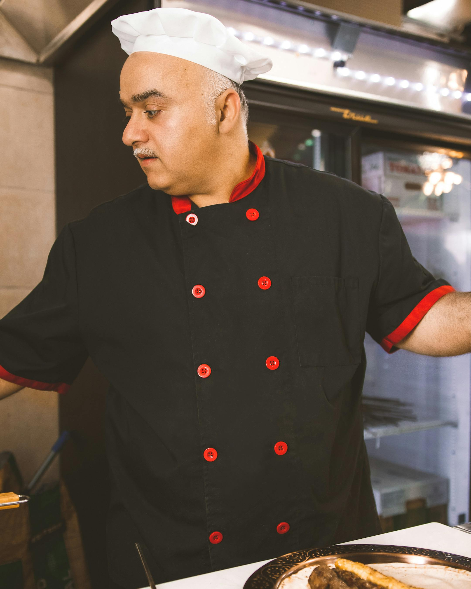

Who are we?
At Sweet Crumbs Bakery, every pastry tells a story of love, care, and tradition. Baked fresh daily with the finest ingredients – right here in your neighborhood.
How it all started
Sweet Crumbs was born in 2012 from a small family kitchen. Our founder, Marie, started baking for friends and neighbors who couldn't resist the smell of her fresh croissants. What began as a small passion project quickly turned into a bakery loved by our whole community.
Our principles
- Freshly baked every morning
- Made with natural, local ingredients
- Traditional family recipes
- Served with a smile
Meet our team
Marie Tembo
Founder & head baker

Rasmus Hoiland
Pastry chef
Visit Sweet Crumbs
12 Rue des Roses – open daily, 7:00 AM to 7:00 PM
Get Directions